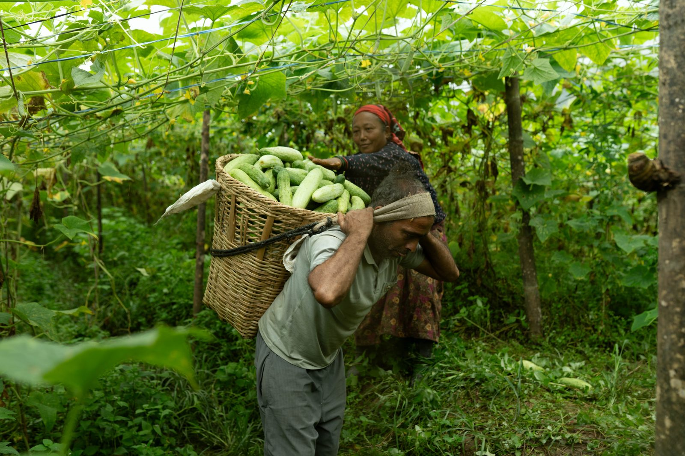
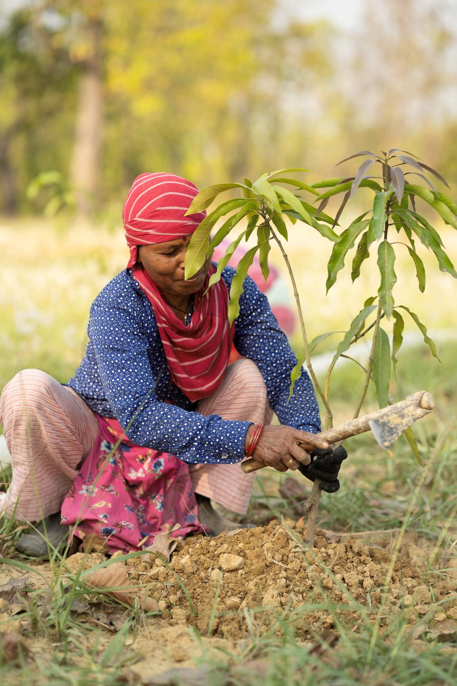
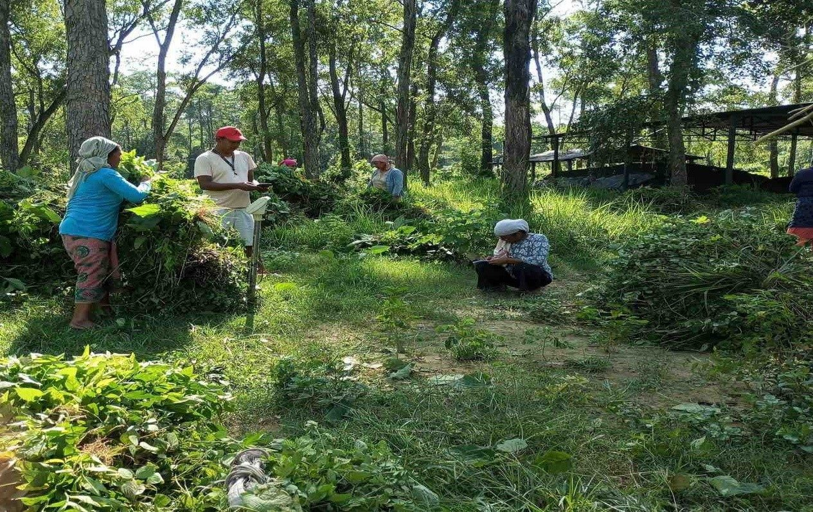
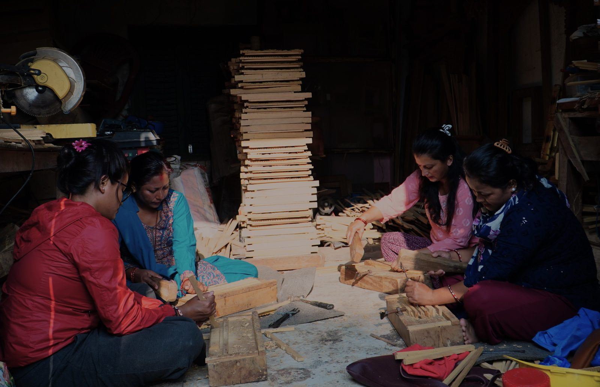

Sustainable management
Sustainable forest management is productive, inclusive and resilient. FFF supports it through sustainable farming, healthy forests, fire prevention and inclusive stewardship — all led by producers.

Community-managed forests conserve biodiversity, store carbon and sustain families. When tenure is clear and organizations are strong, sustainable use outcompetes deforestation.
Women and youth leadership, peer learning and South-South exchange are embedded across all pillars. Local knowledge + technical support = adoption.
Four pillars
Four pillars connect sustainable production, forest stewardship, fire control and inclusive leadership — all led by producer organizations.

Farmers combine sustainable production practices, peer learning and Participatory Guarantee Systems (PGS) to strengthen quality assurance and consumer trust.
Farmers in Bhimphedi adopt PGS-supported practices, backed by locally approved guidelines. 102 households engaged, including 55 women.
Resources: PGS guideline · sustainable farming checklist

Producer organizations connect forest protection, regeneration and responsible harvesting with sustainable enterprise opportunities.
Jadibuti Cooperative in Palpa, Bhatighari CF cluster links medicinal, horticulture and aromatic plant enterprises with community forest supply arrangements. Coffee agroforestry in Sindhu and the Rajapani forest management case study show the approach in practice.

Wildfires destroy standing timber, fodder, medicinal plants, seedlings and soil cover. Each fire burns the raw material forest enterprises depend on, releases stored carbon, threatens settlements and biodiversity, and costs far more to suppress than to prevent. Removing fuel before the dry season is the cheapest protection a community can buy.
In Binayi Triveni, women collect the dry leaves, branches and undergrowth that fed annual wildfires and process it into organic fertilizer. Fuel removal, fire prevention and a new income stream in one: 150,000 kg of fertilizer produced annually, and forest fires down by around 70% in a year.

Women, youth and Indigenous Peoples bring skills, knowledge and leadership to landscape management and local enterprises.
Piple-Pokhara women artisans turn forest wood and sawmill offcuts into products that sustain traditional craftsmanship, while Korak Cooperative uses chiuri butter and traditional knowledge to generate livelihood benefits.
Madhesh province
Members, forest area and an enterprise that pays — the three things FFF invests in together.